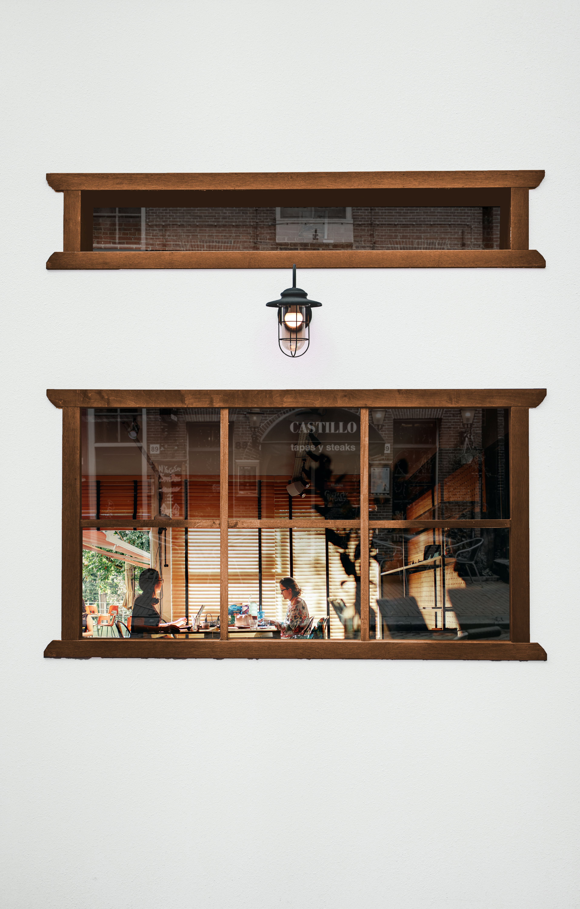
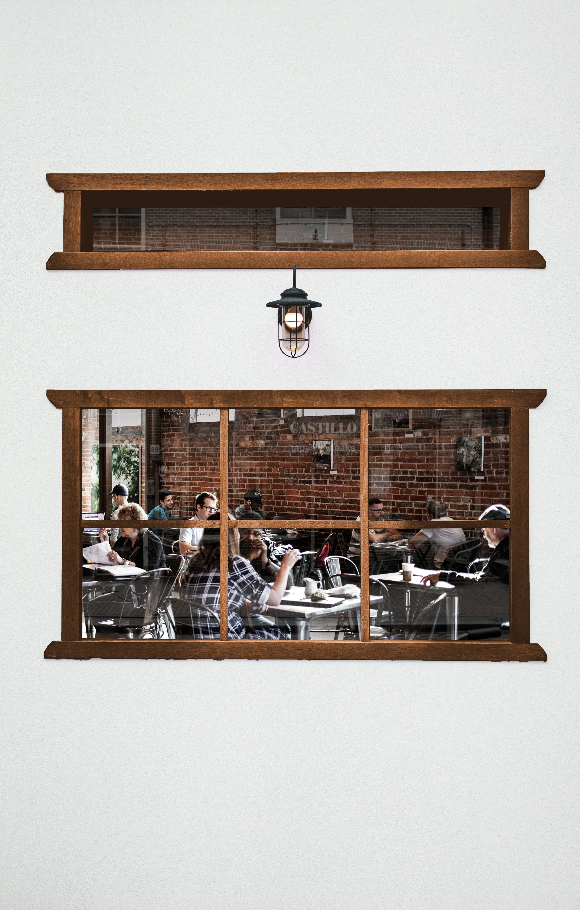
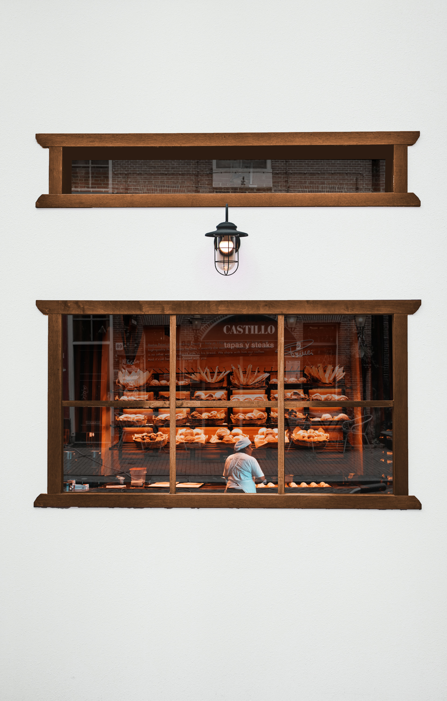

to study
to play
to eat
사람들은 다양한 목적으로 카페에 방문합니다.
방문하는 목적에 따라 원하는 카페도 다릅니다.



공부를 하기위해 방문하는 사람들은
공간이 넓고 오랫동안 집중있게 있을 수 있는 카페를 찾기도 합니다.
친구들을 만나고, 추억을 쌓으러 카페에 가는 사람들은
독특한 컨셉이 있거나 사진에 담기기 좋은 예쁜 카페를 원하기도 합니다.
카페에서 커피와 디저트를 함께 즐기고 싶은 사람들은
디저트가 맛있는 카페를 찾습니다.
“ I’m going to the Cafe Because , ________ ”는
방문 목적에 따라 카페를 추천하고 위치를 제공합니다.
( 본 위치정보는 카카오맵을 기준으로 인천지역의 카페 정보를 제공됩니다. )
to study
to play
to eat
search